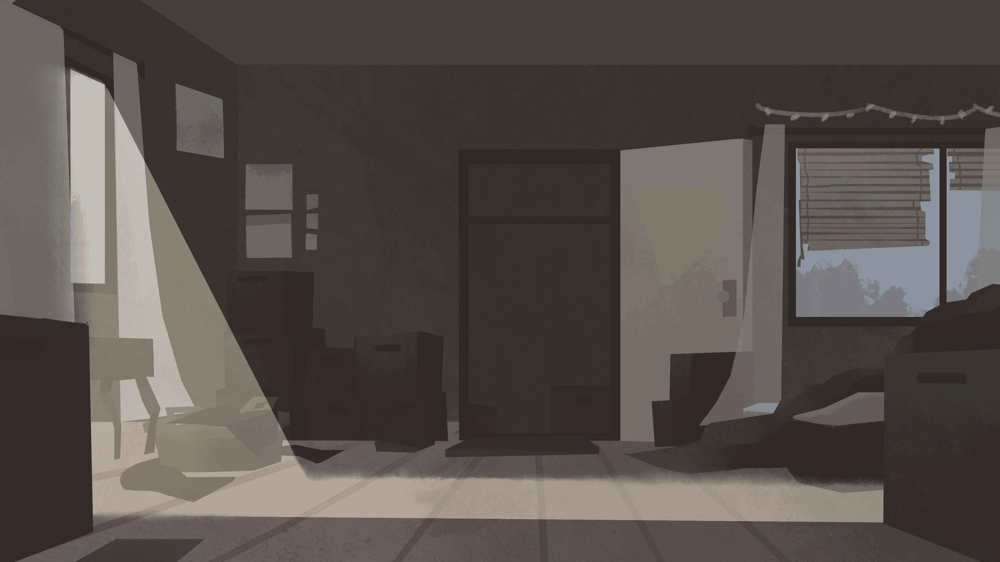
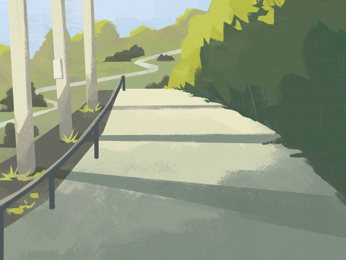

VISUAL DEVELOPMENT & ILLUSTRATION
PERSONAL WORK

Sari Sari Store
A sari sari store painting that exists in my Babaylan project.
{kind=link}

Wisps
A cryptid painting featuring wisps in a forest.
MY DOG, BLYTHIE

Blythie and Me
A painting of me and my dog, Blythie.

Blythie in the Redwoods
A painting of Blythie surrounded by redwood trees.

Blythie Hiking
A painting of Blythie hiking.

Blythie on Campgrounds
A painting of Blythie barking at a bird on a campground.
SHORT FILMS
ALONG FOR THE RIDE (2024)- CALARTS THESIS FILM
{kind=link}

Along for the Ride - Title Card
The title card and beginning scene for Along for the Ride.
{kind=link}
{kind=link}
{kind=link}
{kind=link}
{kind=link}
BOY I'M SCARED (2025)- ARTCENTER THESIS FILM
{kind=link}

Boy I'm Scared - Painting Test
A painting test I did when I joined the Boy I'm Scared project.

Boy I'm Scared - Moe's Chair
A prop design for Moe's chair.

Boy I'm Scared - Yuul's Chair
A prop design for Yuul's chair.
{kind=link}
{kind=link}
MY TURN (2024) - SJSU THESIS FILM
{kind=link}
ARKTUS (2024) - SHERIDAN THESIS FILM

Arktus - City
The city full of anthropomorphic animals in Arktus.
FOG (2023)

FOG - Character Line Up
A character line up from FOG.
ABOUT

Hi! I'm Denielle, a visual development and concept artist based in the Bay Area and currently pursuing a Digital Media Art degree at San Jose State University. I have a strong passion for storytelling, and my work plays with capturing stories through color, texture, and light with unique visual styles. I mainly draw inspiration from my childhood and the fictional tales I grew up watching and listening to with my family. I like working with teams and collaborating on design projects, animated films, and games. I'm currently working on a student-led game project as a concept artist and a couple of animated films with other students at SJSU and Artcenter. In my spare time, I like to open blind boxes, karaoke, play the drums, and make drinks for my friends and family!
Thanks for checking my stuff! :)
Resume: Artist_Resume.pdf
Biography and Artist Statement: Biography_and_Artist_Statement.pdf